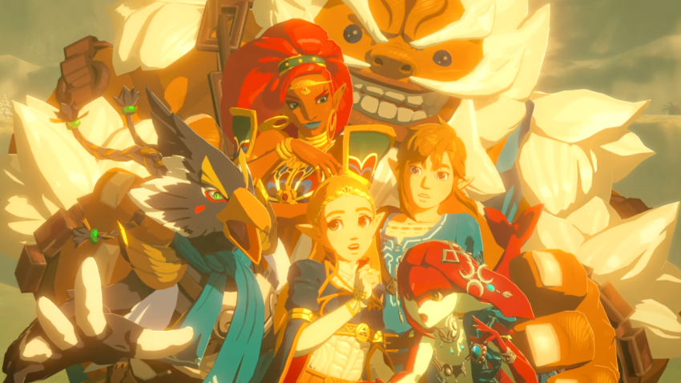
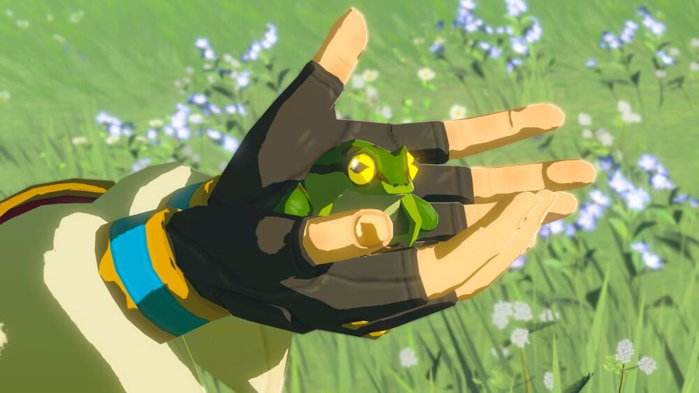

Zelda is the deuteragonist of "The Legend of Zelda" series. She is one of the key members of the Royal Family, and is the princess of the Kingdom of Hyrule and the daughter of its king, making her its second most powerful leader. However, in some games, she is listed as the primary or sole ruler. She is famously known to be the main love interest of Link, despite most media showing them as childhood friends or protector and protectee.

In Breath of the Wild, she has a major speaking role for the first time in the main series. In game, Princess Zelda is not only the princess of Hyrule, but also an aspiring scholar who is very curious alongside being the leader of the Champions of Hyrule.

She always wishes to do what is right for others and is extremely self-sacrificing. Though not always capable of defending herself or others on her own, she does not quit and tries to aid allies when she needs their help. She is also forgiving towards former enemies even when they have harmed her in someway. She is however, extremely loyal towards the ones she cares for (such as Link) and does not tolerate them getting harmed.